Eight independent materials; all64 fixed outcomes. See REPORT.md for complete protocol/process-deviation disclosure and factual tables.
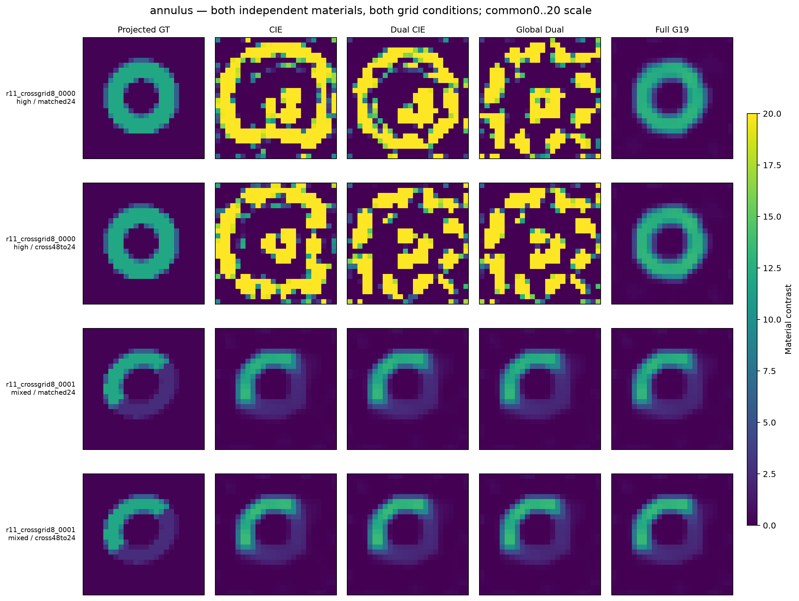
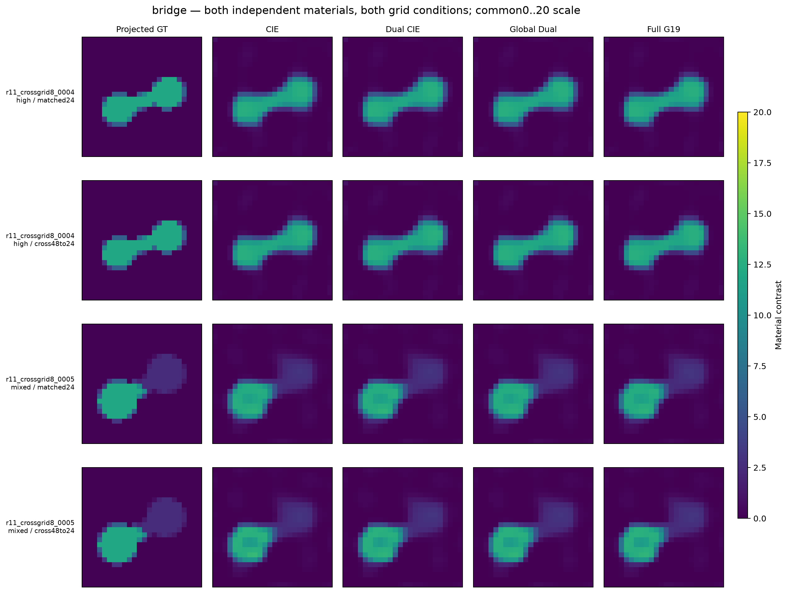
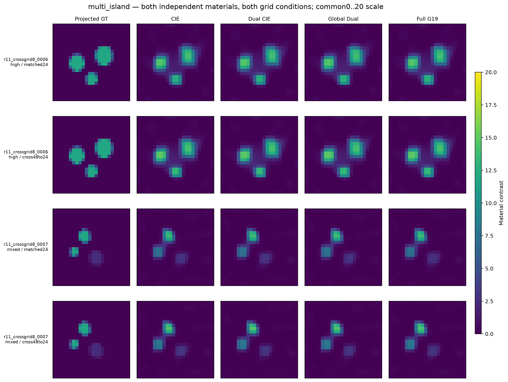
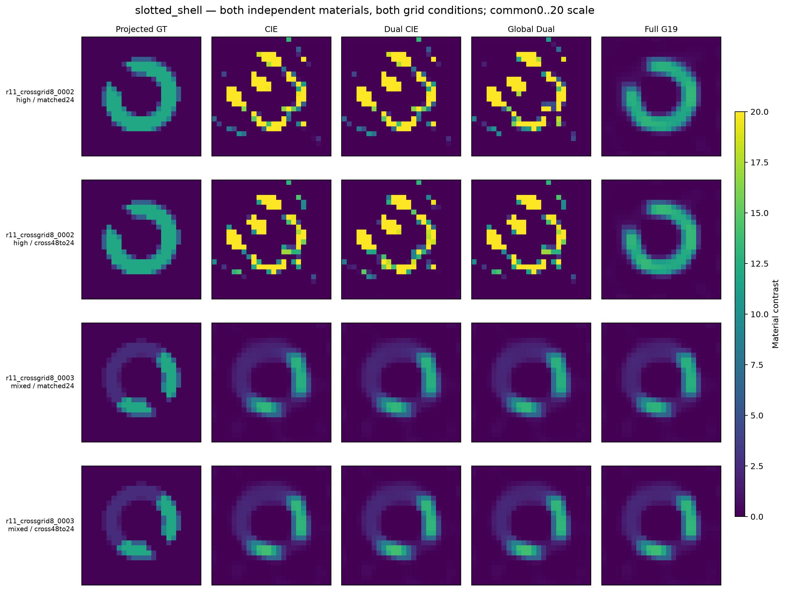
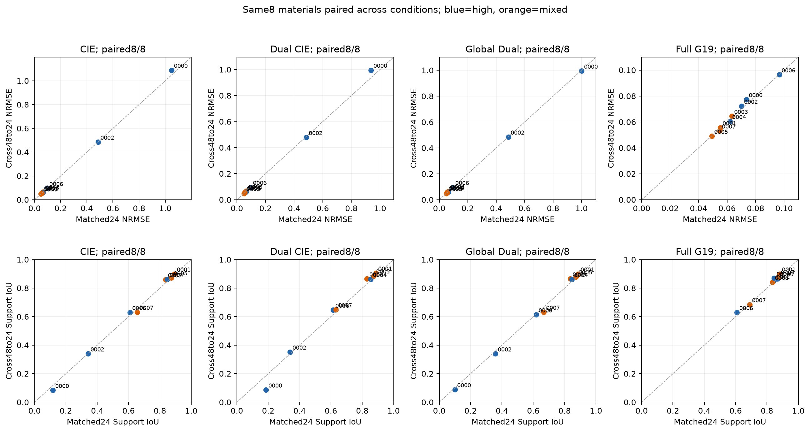
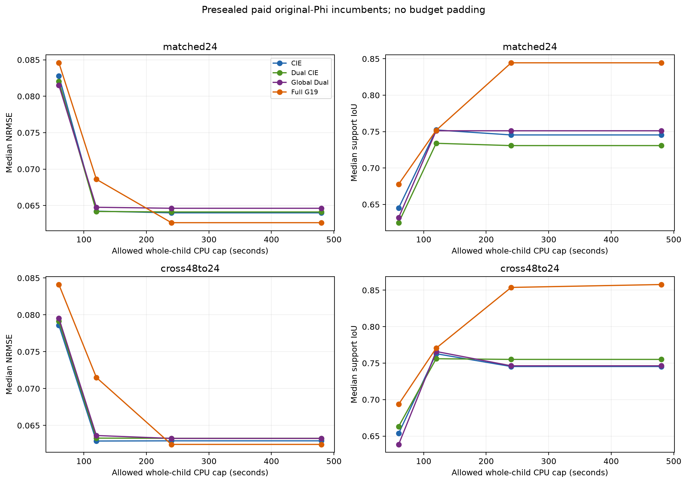
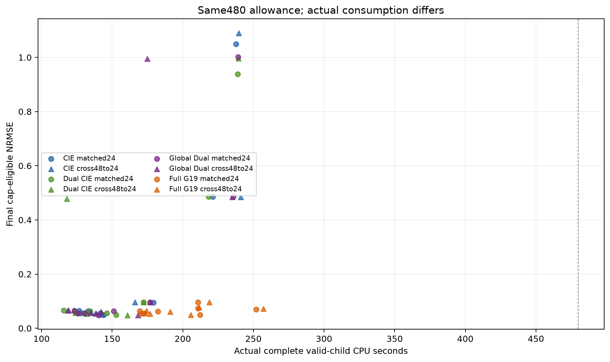
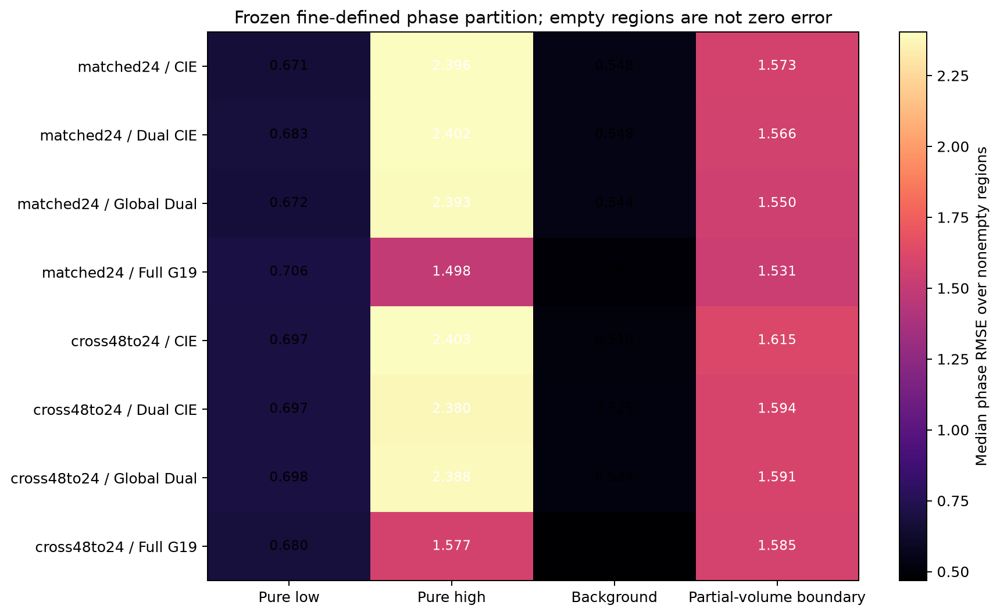
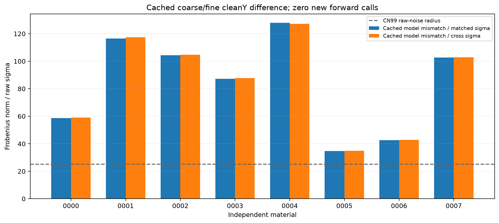
Main G19 endpoint remains6/8. See complete exact-B tables and endpoint-transition audit; no7/8 intermediate view replaces the primary endpoint.
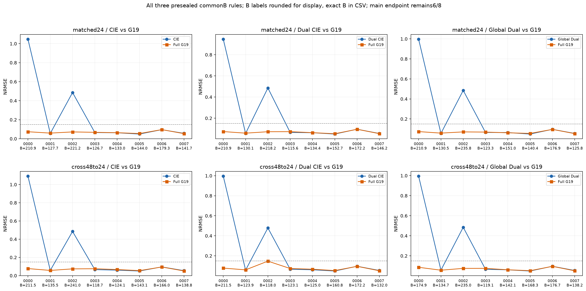
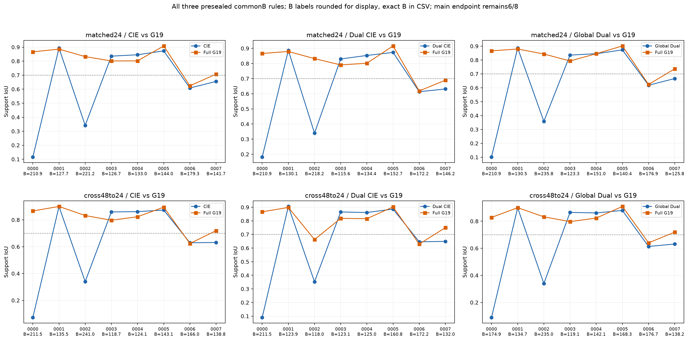
Both grids show4/8 versus6/8, but matched adds0000+0002 and cross adds0000+0007. Cross shell0002 atB117.953125 has IoU0.66272 and fails; cross bridge0007 atB132.046875 has IoU0.75 and passes, whereas its final endpoint IoU0.68421 fails. OriginalPhi still decreases. Main full G19 remains6/8; this is not complete cross-grid shell recovery at Dual-commonB.